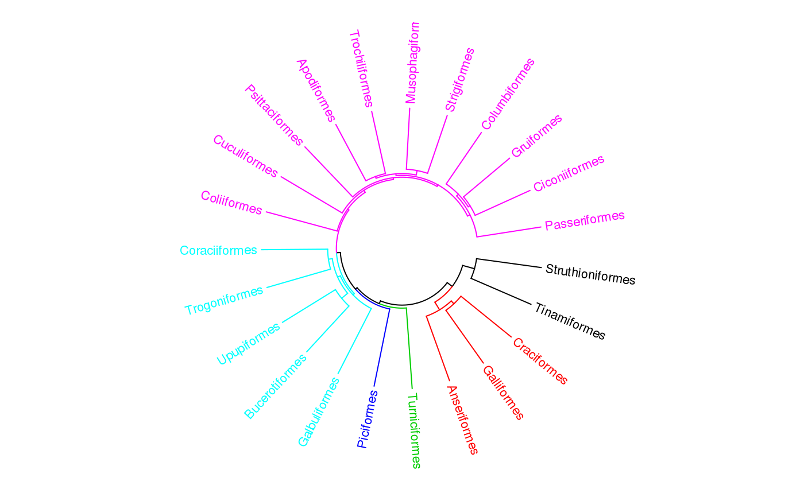

circos.dendrogram.RdAdd circular dendrograms
circos.dendrogram( dend, facing = c("outside", "inside"), max_height = NULL, use_x_attr = FALSE)
| dend | A |
|---|---|
| facing | Is the dendromgrams facing inside to the circle or outside. |
| max_height | Maximum height of the dendrogram. This is important if more than one dendrograms are drawn in one track and making them comparable. |
| use_x_attr | Whether use the |
Assuming there are n nodes in the dendrogram, the positions for leaves on x-axis is 0.5, 1.5, ..., n - 0.5.
So you must be careful with xlim when you initialize the cirular layout.
You can use the dendextend package to render the dendrograms.
load(system.file(package = "circlize", "extdata", "bird.orders.RData")) labels = hc$labels # name of birds ct = cutree(hc, 6) # cut tree into 6 pieces n = length(labels) # number of bird species dend = as.dendrogram(hc) circos.par(cell.padding = c(0, 0, 0, 0)) circos.initialize(factors = "a", xlim = c(0, n)) # only one sectormax_height = attr(dend, "height") # maximum height of the trees circos.trackPlotRegion(ylim = c(0, 1), bg.border = NA, track.height = 0.3, panel.fun = function(x, y) { for(i in seq_len(n)) { circos.text(i-0.5, 0, labels[i], adj = c(0, 0.5), facing = "clockwise", niceFacing = TRUE, col = ct[labels[i]], cex = 0.7) } })suppressPackageStartupMessages(require(dendextend)) dend = color_branches(dend, k = 6, col = 1:6) circos.trackPlotRegion(ylim = c(0, max_height), bg.border = NA, track.height = 0.4, panel.fun = function(x, y) { circos.dendrogram(dend, max_height = max_height) })